Isaac
HP: ❤️❤️❤️
Item inicial:
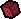
(Precisa ser liberado)Esse é o personagem principal do jogo, e também o único que vem liberado logo de início. É um personagem rasoável que é bem equilibrado em todos os aspectos. Após derrotar o chefe final Isaac com o personagem ???, ele passa a vir com o item D6 logo no início de cada partida.
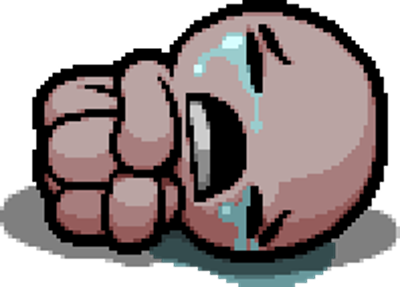
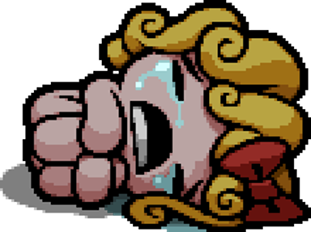
Magdalene
HP: ❤️❤️❤️❤️
Item inicial:
Também conhecida como Maggy, essa é a personagem que vem com maior quantidade de HP no jogo, e também possui um item que é possível regenerar um coração quando usado. Infelizmente é um personagem lento e seu dano é baixo.
Cain
HP: ❤️❤️
Item inicial:
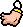
Cain é um personagem fácil de se jogar, mesmo possuindo menor HP que os dois citados acima. Para equilibrá-lo melhor, sua velocidade e seu dano são ótimos no começo do jogo, e ainda vem com um ótimo item passivo.
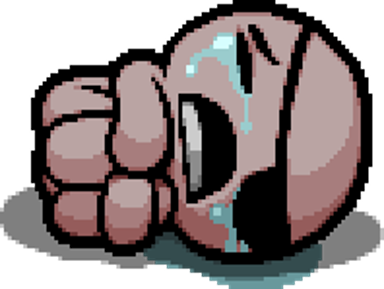
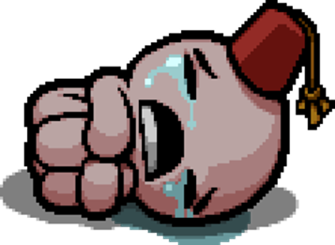
Judas
HP: ❤️
Item inicial:
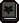
Judas é o segundo personagem com maior ataque inicial do jogo, ainda acompanhado do Book of Belial, atinge altíssimos danos logo no começo do jogo. Infelizmente seu HP é muito baixo, mas ainda assim vale a pena visando seus altos danos em apenas uma lágrima.
???
HP:
Item inicial: 
??? é um dos personagens mais complicados de se manusear. Ele não possui HP fixo, e qualquer item que aumente o seu HP máximo vai apenas garantir um Soul Heart. A única forma de aumentar seu HP, apenas usando o Soul Heart e 🖤 Black Heart.
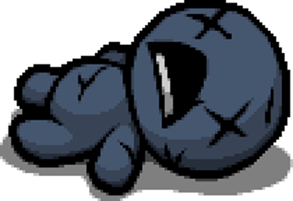
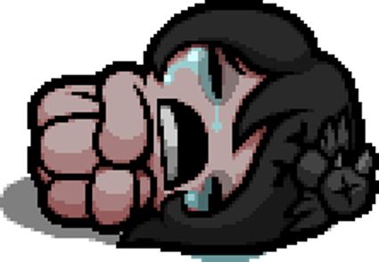
Eve
HP: ❤️❤️
Item inicial: e
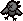
Eve é o personagem com menor ataque inicial, mas possui uma ótima velocidade além de iniciar com diversos itens passivos muito úteis do começo ao fim do jogo. Infelizmente seu HP também é baixo, mas ainda assim é possível sobreviver bem graças aos brinquedos com que ela inicia as partidas.
Samson
HP: ❤️❤️❤️
Item inicial: 
Samson é um personagem com alta velocidade de tiros, e vem com uma passiva que aumenta seu dano toda vez que é atingido por algum inimigo. Esse aumento de dano dura o andar inteiro, e é perfeito para danos massivos principalmente em chefes. Diferente do Binding of Isaac original, Samson vem com mais HP, sendo de grande ajuda.
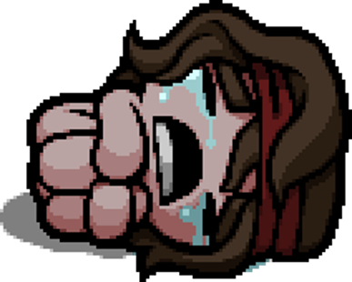
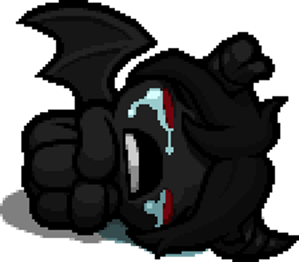
Azazel
HP: 🖤🖤🖤
Item inicial: (Com alcance reduzido)
O personagem considerado por todos o mais Overpower, e com razão! Apesar de possuir o menor alcance de todos os personagens, ele é o que vem com maior quantidade de habilidades passivas, maior dano, e mesmo possuindo 3 🖤 Black Hearts como HP inicial, ele ainda consegue aumentar o HP máximo com itens passivos, sendo o oposto de ???.
Lazarus
HP: ❤️❤️
Item inicial:
Lazarus é um personagem com um alcance muito baixo, e que vem com Sorte negativa. Pode ser complicado jogar nos primeiros andares com ele, mas diferente de todos os outros personagens, ele é o único que vem com uma vida extra. Quando Lazarus morre, ele volta na mesma sala como Lazarus Revivido, que ganha bonificações em diversos atributos (como dano, alcance, etc) e o item passivo Anemic. Mas seu HP se torna apenas 1 coração.
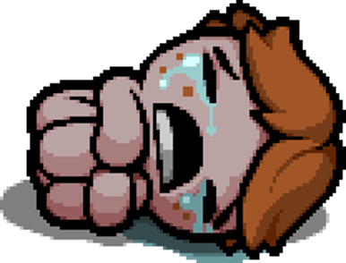
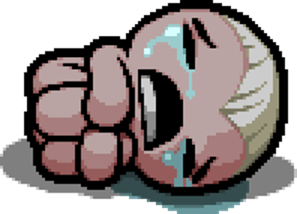
Eden
HP: Aleatório, sendo o máximo 3 corações ❤️ ou
Item inicial: Começa com 2 itens aleatórios
Eden é o personagem aleatório do jogo. Seus atributos iniciais são totalmente aleatórios, e ele vem com 2 itens que também são aleatórios. Esse é o único personagem que necessita de um "item" para ser jogado, no caso, os Eden Tokens. Esses tokens são adquiridos após derrotar o Mom's Heart ou It Lives. Toda vez que uma run é iniciada com o Eden, um token é consumido.
The Lost
HP: Nenhum
Item inicial:
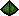
(Precisa ser liberado)The Lost é o personagem secreto do jogo. Diferente de qualquer outro, ele não pode aumentar seu HP de nenhuma forma, fazendo com que 1 hit = morte. É de longe o personagem mais difícil de se terminar o jogo, mas visando equilibrar essa dificuldade, The Lost consegue fazer pactos do o diabo de graça, podendo adquirir uma quantidade absurda de bonus passivos o deixando facilmente Overpower. O complicado, é avançar o jogo com ele sem esses poderes! Também, esse é o personagem mais difícil de se liberar.
.- -.. --- .-. --- / --- / .--- .-.. .. --- / -.-. . ... .- .-.
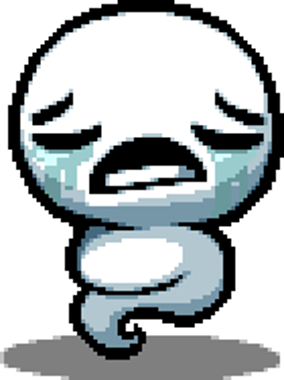